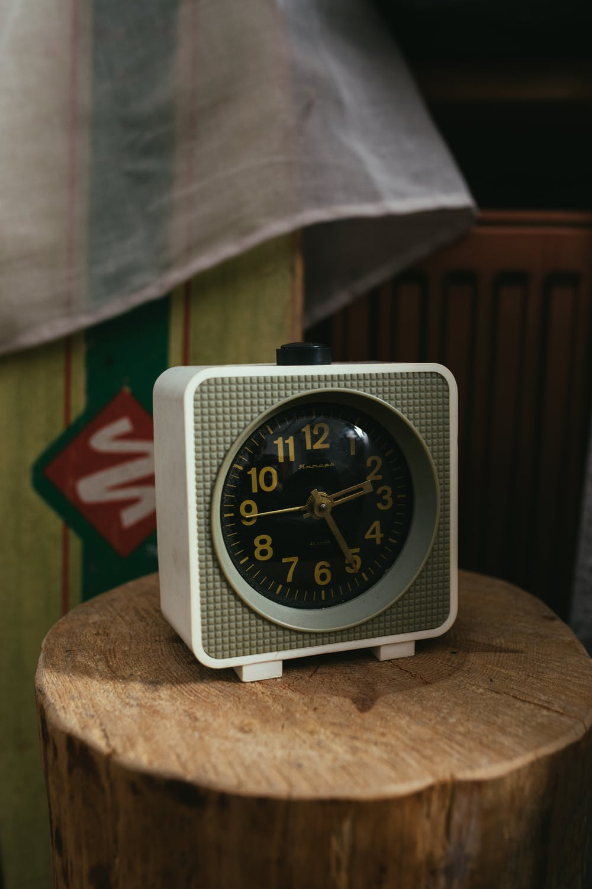

1. The light bulb
The invention of the light bulb transformed our world by removing our dependence on natural light, allowing us to be productive at any time, day or night. Several inventors were instrumental in developing this revolutionary technology throughout the 1800s; Thomas Edison is credited as the primary inventor because he created a completely functional lighting system, including a generator and wiring as well as a carbon-filament bulb like the one above, in 1879.
2. Compass
This navigational device has been a major force in human exploration. The earliest compasses were made of lodestone in China between 300 and 200 B.C. Without the compass, we humans would never be able to discover our surroundings on earth.

3. Cars
Cars completely changed the way we travel, as well as the design of our cities, and thrust the concept of the assembly line into the mainstream. They were invented in their modern form in the late 19th century by a number of individuals, with special credit going to the German Karl Benz for creating what’s considered the first practical motorcar in 1885.
4. The Telephone
Several inventors did pioneering work on electronic voice transmission - many of whom later filed intellectual property lawsuits when telephone use exploded - but it was Scottish inventor Alexander Graham Bell who was the first to be awarded a patent for the electric telephone on March 7 1876 (his patent drawing is pictured above). Three days later, Bell made the first telephone call to his assistant, Thomas Watson, saying "Mr Watson, come here — I want to see you," according to author A. Edward Evenson in his book.
5. The Computer
invented in the 1970s, personal computers greatly expanded human capabilities. While your smartphone is more powerful, one of the earliest PCs was introduced in 1974 by Micro Instrumentation and Telemetry Systems (MITS) via a mail-order computer kit called the Altair. From there, companies like Apple, Microsoft, and IBM have redefined personal computing.
6. Electricity
Utilization of electricity is a process to which a number of bright minds have contributed over thousands of years, going all the way back to Ancient Egypt and Ancient Greece, when Thales of Miletus conducted the earliest research into the phenomenon. The 18th-century American Renaissance man Benjamin Franklin is generally credited with significantly furthering our understanding of electricity, if not its discovery. It’s hard to overestimate how important electricity has become to humanity as it runs the majority of our gadgetry and shapes our way of life.
7. Steel
The unaware will think that steel is a naturally occurring metal, but it isn’t. Steel is an alloy composed of mostly iron and a very small percentage of carbon. The utilization of various metals such as iron and bronze started earlier than 4,000 years ago, but steel took a prominent role in human civilization during the Industrial Revolution. Mass production of steel began in the 1850s using the “Bessemer Process.” a technique used to create steel by using molten pig iron. Since then, steel has been used in the construction of everything from bridges and houses to engines and skyscrapers.
8. Antibiotics
Joseph Lister and Louis Pasteur were the first to start the war against bacteria, but it was Alexander Fleming who propelled the medical world to take a giant leap ahead in the same battle thanks to his discovery – albeit accidental – of the bacteria-inhibiting mold we now call penicillin in 1928. Penicillin proved to be a major step forward in the world of antibiotics and was used widely throughout the 20th century. Without antibiotics, almost half of the world population would die from viruses, bacteria and parasites. Today antibiotics are widely spread around the world, and fewer people die each year from illnesses such as the flu, which could be life threatening in the late 1800.
9. Clock
The obelisks, constructed by ancient Egyptians around 3,500 B.C.E., were among the earliest models of shadow clock. The sundial also came from Egypt about two thousand years after. Both were great representations of the time-keeping instruments we use now.
10. The Wheel
Humanity's most greatest, and most revolutionary inventions of all time was actually a simple wheel. Before the invention of the wheel in 3500 B.C., humans were severely limited in how much stuff we could transport over land, and how far. The wheel itself wasn't the most difficult part of "inventing the wheel." When it came time to connect a non-moving platform to that rolling cylinder, things got tricky, according to David Anthony, a professor of anthropology at Hartwick College. Without the wheel, then we would most likely have no cars, gears, computers or almost anything we use in everyday life. Because most of our tools are made by machinery which uses wheels. So we should thank our great ancestors for inventing something extremely important as the wheel.